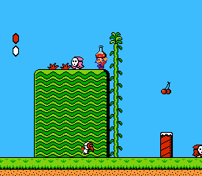
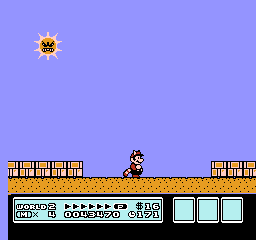

Super Mario Bros
Al meer dan 25 jaar bestormt de Super Mario-serie de ranglijsten en worden de harten veroverd van fans over de hele wereld.

Super Mario Bros 2
Ga met Mario en vrienden mee op een tocht waarin je de wereld van Subcon probeert te redden van de tirannieke kikker Wart.

Super Mario Bros 3
Wanneer Bowser de dieren heeeft veranderd en hun staffen heeft, moeten Mario en Luigi weer in actie komen.

Yoshi's Island
Keer terug naar Yoshi's Island voor een origineel avontuur in de geest van de klassieke Super Nintendo.